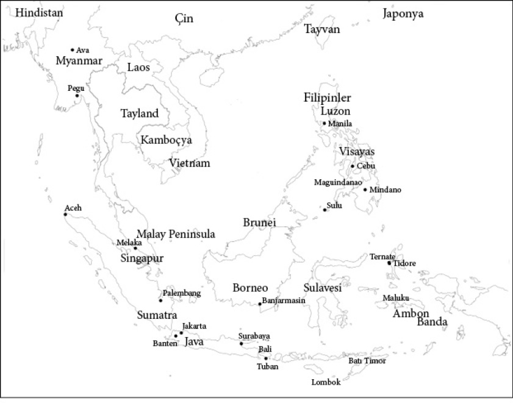
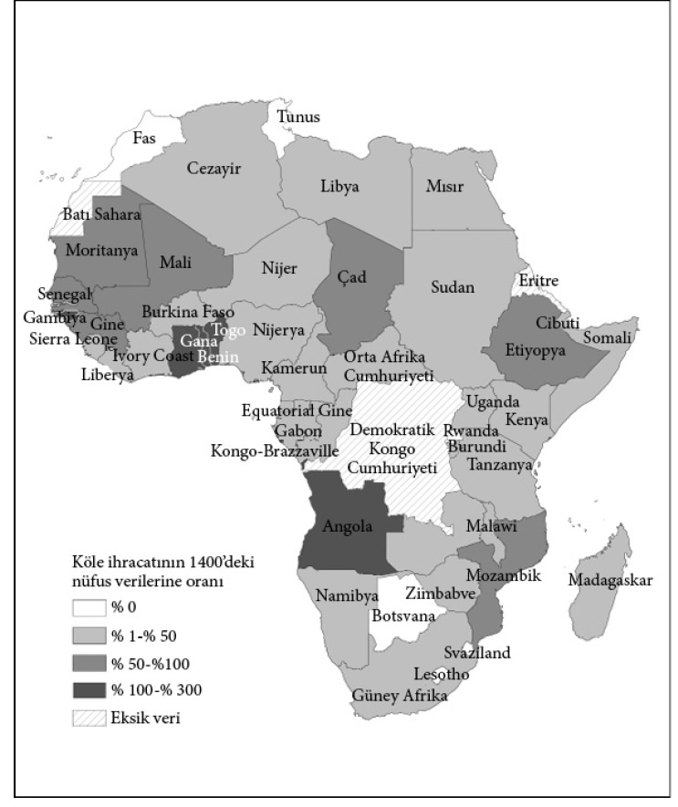
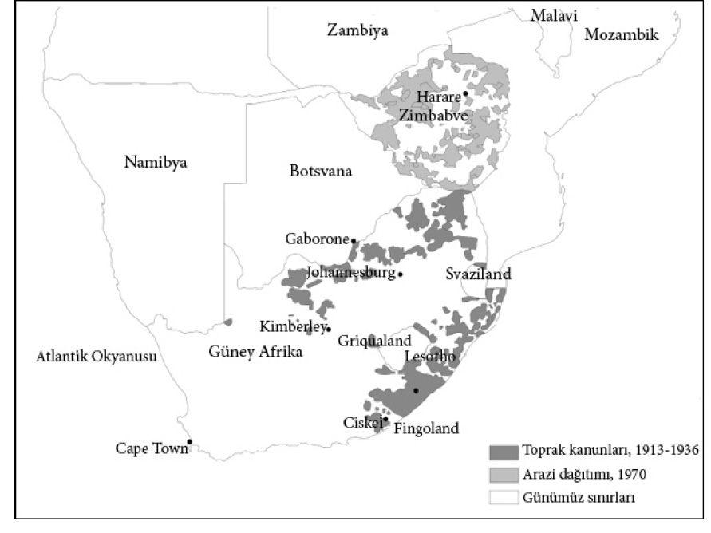

9

Tersine gelişim
Baharat ve soykırım
Modern Endonezya’daki Maluku Adaları üç ada grubundan oluşuyor. Erken 17. yüzyılda kuzeydeki adalar bağımsız Tidore, Ternate ve Bacan krallıklarına ev sahipliği yaptılar. Merkezdeki adalar Ambon Krallığı’nın yurduydu. Güneyde yer alan Banda Adaları ise henüz siyasal bütünlük sağlayamamış küçük bir takımadaydı. Maluku Adaları bugün bize uzak gibi görünse de karanfil, küçük hindistancevizi kabuğu ve muskat gibi kıymetli baharatların tek üreticisi olduğundan o zamanlar dünya ticaretinin merkezlerinden biriydi. Bunlardan küçük hindistancevizi kabuğu ve muskat yalnızca Banda Adaları’nda yetişiyordu. Bu adaların sakinleri nadir bulunan bu baharatları üretiyor ve Java Adası’ndan, Malezya Yarımadası’ndaki ticaret merkezi Malakka’dan, Hindistan’dan, Çin’den ve Arabistan’dan gelen yiyecek ve mamul mallarla mübadele ediyorlardı.
Adalarda yaşayanların Avrupalılarla ilk teması 16. yüzyılda baharat satın almaya gelen Portekizli denizcilerle gerçekleşti. O tarihten önce baharatların sevkiyatı Osmanlı İmparatorluğu’nun kontrolündeki ticaret yolları vasıtasıyla Ortadoğu üzerinden gerçekleştirilmek zorundaydı. Avrupalılar Baharat Adaları’na ve baharat ticaretine doğrudan erişebilmek için Afrika’nın etrafından ya da Atlantik üzerinden bir yol arayışına girdiler. Ümit Burnu 1488’de Portekizli denizci Bartolomeu Dias tarafından dolanıldı ve 1498’de Vasco de Gama aynı rota üzerinden Hindistan’a ulaştı. Avrupalılar Baharat Adaları’na ulaşmak için ilk kez kendilerine ait bağımsız bir güzergâha sahipti.
Portekizliler vakit kaybetmeden baharat ticaretini kontrol altına almak için uğraşmaya koyuldular. 1511’de Malakka’yı ele geçirdiler. Malezya Yarımadası’nın batı kesimindeki stratejik konumu nedeniyle Güneydoğu Asya’nın dört bir yanından tüccarlar Hintli, Çinli ve Arap tüccarlara baharatlarını satmak için buraya geliyorlar, bu tüccarlar da yükledikleri baharatları Batı’ya gönderiyorlardı. Portekizli tüccar Tomé Pires’in 1515’te ifade ettiği gibi, “Bin fersah mesafedeki her milletten adam ticaret ve alışveriş yapmak üzere Maluku’ya gelirdi. Maluku’ya hükmedenin eli Venedik’in boğazında demekti.”
Malakka’yı ellerinde tutan Portekizliler sistematik bir biçimde kıymetli baharat ticareti üzerinde tekel kurmaya çalıştılar. Fakat bunu başaramadılar.
Karşılaştıkları rakip yabana atılır cinsten değildi. 14 ila 16. yüzyıllar arasında Güneydoğu Asya’da baharat ticaretine dayalı yoğun bir ekonomik gelişim söz konusuydu. Aceh, Banten, Melaka, Makassar, Pegu ve Brunei gibi şehir-devletler baharatların yanı sıra aralarında sert ağaçların da olduğu başka ürünler de üretip ihraç ederek hızla büyüdüler.
Bu devletler aynı dönemde Avrupa’da olanlara benzeyen mutlakıyetçi yönetim biçimlerine sahiptiler. Siyasal kurumların gelişimini savaş yöntemlerindeki ve uluslararası ticaretteki teknolojik değişiklikler gibi benzer süreçler kamçılamıştı. Devlet kurumları merkezdeki mutlak güç talep eden kralla daha merkezi bir hale gelmişti. Avrupa’nın mutlakıyetçi hükümdarları gibi Güneydoğu Asya kralları da esasen ticaret gelirlerine bel bağlıyor, hem kendilerine pay ayırıyor hem de yerli ve yabancı elite tekel hakkı bağışlıyorlardı. Mutlakıyetçi Avrupa’da olduğu gibi bu durum bir miktar büyüme sağlamıştı fakat önemli giriş engelleri ve güvence altına alınmamış mülkiyet haklarıyla ekonomik refaha götürecek ideal bir ekonomik kurumlar sisteminden çok uzaktı. Fakat Portekizliler Hint Okyanusu’nda hâkimiyet kurmaya çalışırken dahi ticarileşme süreci devam ediyordu.

Harita 14: 1600’de Güneydoğu Asya, Baharat Adaları, Ambon ve Banda.
Avrupalıların varlığı iyiden iyiye hissedilir hale geldi; Hollandalıların gelişiyle etkisi daha da arttı. Hollandalılar Malakka’nın kıymetli baharatların arzını tekelleştirmenin yerli ya da Avrupalı tüccarlarla rekabetten çok daha kârlı olacağını hemen fark ettiler. 1600’de Ambon hükümdarını ülkedeki karanfil ticareti üzerinde tekel kurmalarını sağlayan münhasır bir anlaşma imzalamaya ikna ettiler. Hollandalılar 1602’de Hollanda Doğu Hindistan Kumpanyası’nın kurulmasıyla her ne pahasına olursa olsun tüm baharat ticaretini ele geçirmeye ve rakiplerini saf dışı bırakmaya teşebbüs ettiler, işler Hollandalılar için iyi gitmeye başlamış fakat Güneydoğu Asya için tam tersi olmuştu. Hollanda Doğu Hindistan Kumpanyası, modern şirketin gelişiminde büyük bir dönüm noktası olan İngiliz Doğu Hindistan Kumpanyası’nın ardından ikinci Avrupalı anonim şirketti ve sonradan Avrupa’nın sınai büyümesinde çok büyük bir rol üstlenecekti. Bu şirket aynı zamanda kendi ordusu ve savaş açacak, yabancı toprakları sömürgeleştirecek gücü olan ikinci şirketti. Hollandalılar şirketin askeri gücü sayesinde Ambon hükümdarıyla anlaşmalarını tatbik etmek için tüm potansiyel yetkisiz tüccarları saf dışı bırakmaya koyuldular. 1605’te Portekizlilere ait önemli bir kaleyi ele geçirdiler ve diğer tüccarların tümünü defettiler. Ardından kuzey Malakka’ya açılıp Tidore, Ternate ve Bacan hükümdarlarına kendi bölgelerinde karanfil ekimini ve ticaretini yasaklamayı kabul ettirdiler. Ternate’ye dayattıkları anlaşma Hollandalılara orada buldukları tüm karanfil ağaçlarını yok etme hakkı bile tanıyordu.
Ambon o tarihte Avrupa’nın çoğu ülkesinde ve Amerika’da görülenlere benzer bir biçimde yönetiliyordu. Ambon yurttaşları hükümdara vergi vermekle yükümlüydü ve angaryaya tabiydi. Hollandalılar bu sistemi devraldılar ve hem daha fazla emek sömürüsü için hem de adadan elde edecekleri daha fazla karanfil için daha sıkı hale getirdiler. Hollandalılar gelmeden önce geniş aileler Ambon elitine karanfil cinsinden vergi öderlerdi. Hollandalılar ise her aileyi toprağa bağladı ve belirli sayıda karanfil ağacı yetiştirmesini şart koştu. Bunun yanı sıra Hollandalılara angarya hizmeti vermeye de mecburdular.
Hollandalılar Banda Adaları’nın da kontrolünü ele geçirdiler; bu kez küçük hindistancevizi kabuğu ve muskat üzerinde tekel kurma niyetindeydiler. Fakat Banda Adaları Ambon’dan çok farklı bir örgütlülüğe sahipti. Çok sayıda küçük özerk şehir-devletten oluşuyordu ve hiyerarşik bir sosyal ya da siyasal yapıya sahip değildi. Bu küçük devletler, aslına bakılırsa küçük birer kasabadan daha büyük değildiler, yurttaşların oluşturduğu köy meclisleri tarafından yönetiliyorlardı. Hollandalıların tekel kurmak için anlaşma imzalamaya zorlayabilecekleri bir merkezi otorite olmadığı gibi küçük hindistancevizi kabuğu ve muskat arzının tamamını ele geçirmek için kendilerine mal edebilecekleri bir vergi sistemi de yoktu. Bu, her şeyden önce Hollandalıların İngiliz, Portekizli, Hintli ve Çinli tüccarlarla rekabet etmek zorunda kalmaları ve yüksek fiyat ödemediklerinde baharatı rakiplerine kaptırmaları anlamına geliyordu. Küçük hindistancevizi kabuğu ve muskat tekeliyle ilgili ilk planları suya düşünce Batavia’nın Hollanda valisi Jan Pieterszoon Coen alternatif bir plan üretti. Coen 1618’de Hollanda Doğu Hindistan Kumpanyası’nın yeni başkenti olarak Java Adası’nda Batavia’yı kurdu. 1621’de bir filoyla Banda’ya yelken açtı ve adalardaki nüfusun neredeyse tamamını, muhtemelen 15 bin insanı katletti. Tüm liderleri de halkın geri kalanıyla birlikte infaz edildi. Yalnızca hindistancevizi kabuğu ve muskat üretimiyle ilgili temel bilgileri muhafaza etmeye yetecek bir avuç insan sağ bırakıldı. Coen bu soykırım tamamlandıktan sonra planı için gerekli siyasal ve ekonomik yapıyı; bir plantasyon toplumunu oluşturmaya koyuldu. Adalar 68 parsele bölündü ve çoğu Hollanda Doğu Hindistan Kumpanyası’nın eski ve yeni çalışanlarından oluşan 68 Hollandalıya verildi. Sağ kalan az sayıdaki Bandalı bu yeni plantasyon sahiplerine baharatın nasıl üretildiğini öğrettiler. Hollandalılar artık kimsenin yaşamadığı adaları yeniden iskân etmek ve baharat üretmek için Hindistan Şirketi’nden sabit fiyatla geri satmak kaydıyla köle satın alabiliyorlardı. Hollandalıların Baharat Adaları’nda oluşturduğu sömürücü kurumlar arzu edilen neticeye ulaştı; her ne kadar Banda’da 15 bin masum insanın hayatına ve adaları az gelişmişliğe mahkûm edecek bir dizi siyasal ve ekonomik kurumun tesis edilmesine mal olsalar da. 17. yüzyılın sonuna gelindiğinde Hollandalılar bu baharatların arzını yaklaşık yüzde 60 azaltmış ve muskatın fiyatı ikiye katlanmıştı.
Hollandalılar Malakka’da geliştirdikleri stratejiyi tüm bölgeye uyguladılar. Bu durum Güneydoğu Asya’nın geri kalanının ekonomik ve siyasal kurumları için derin anlamlar taşıyordu. Bölgedeki çeşitli devletlerin 14. yüzyılda başlayan uzun ticari genişleme süreci tersine döndü. Doğrudan Hollanda Doğu Hindistan Kumpanyası’nın sömürgeleştirmediği devletler bile içe kapanıp ticareti bıraktı. Güneydoğu Asya’da yeni yeni filizlenen ekonomik ve siyasal değişim durdurulmuş oldu.
Bazı devletler Hollanda Doğu Hindistan Kumpanyası’nın yarattığı tehditten sakınmak için ithalata yönelik tahıl üretimini bırakıp ticari faaliyetlerine son verdiler. Hollandalılarla karşı karşıya gelmektense otarşiye, kendine yetecek kadar bir iktisadi düzene kanaat getirmek yeğdi. 1620’de Java Adası’ndaki Banten devleti Hollandalıların kendilerini rahat bırakmaya razı edeceği umuduyla biber ağaçlarını kesti. 1686’da Hollandalı bir tüccar Filipinler’in güneyindeki Maguindanao’yu ziyaret ettiğinde ona “Malakka’da olduğu gibi burada da Muskat ve karanfil yetiştirilebilir. Fakat artık yoklar çünkü eski Raja ölmeden önce hepsini ortadan kaldırttı. Hollanda Şirketi’nin bunlar için gelip kendileriyle savaşacağından korktu” denmişti. 1699’da bir tacirin Maguindanao hükümdarı hakkında işittikleri de buna benzer şeylerdi: “Biber ekimini sürdürmeyi yasakladı, böylece ne şirketle ne de başka nüfuzlu kimselerle savaşa girmek zorunda kalmayacaktı.” Kentler boşalıyor, hatta nüfus azalıyordu. 1635’te Birmanyalılar sahil kesimindeki Pegu’da bulunan başkentlerini Irrawaddy Nehri’nin denizden çok daha içerlerdeki Ava’ya taşıdılar.
Hollanda’nın saldırgan politikaları olmasaydı Güneydoğu Asya devletleri nasıl bir ekonomik ve siyasal gelişim rotası izlerdi sorusunun cevabını bilmiyoruz. Kendilerine özgü bir mutlakıyetçilik geliştirebilirlerdi, 16. yüzyılın sonunda ne durumdaysalar öylece kalabilirlerdi ya da giderek daha fazla kapsayıcı kurumu hayata geçirerek ticarileşme sürecine devam edebilirlerdi. Fakat Malakka’da olduğu gibi, Hollanda sömürgeciliği ekonomik ve siyasal gelişimlerinde köklü bir değişime neden olmuştu. Güneydoğu Asya halkı ticareti bıraktı, içe kapandı ve daha mutlakıyetçi bir hale geldi. Müteakip iki yüzyılda Sanayi Devrimi’yle ortaya çıkan yeniliklerden yararlanabilecek bir konumda olamayacaklardı. Ve en nihayetinde, ticaretten geri durmaları onları Avrupalılardan koruyamayacaktı; 18. yüzyılın sonuna gelindiğinde hepsi Avrupa sömürge imparatorluğunun birer parçası haline gelecekti.
7. bölümde Atlantik’teki Avrupa yayılmacılığının Britanya’daki kapsayıcı kurumların yükselişini nasıl teşvik ettiğini gördük. Fakat Hollanda hâkimiyetindeki Malakka deneyiminin ortaya koyduğu gibi, bu yayılmacılık sömürücü kurumlar dayatarak ya da mevcut olanları daha da güçlendirerek dünyanın dört bir yanında az gelişmişlik tohumları ekti. Bunlar da doğrudan ya da dolaylı olarak tüm dünyada yeni yeni ortaya çıkan ticari ve sınai faaliyetleri ortadan kaldırdı ya da sanayileşmeyi engelleyen kurumları kalıcı hale getirdi. Sonuçta sanayileşme dünyanın bazı bölgelerinde hızla yayılırken bu yeni teknolojilerden yararlanma imkânı bulamayan Avrupa sömürge imparatorluğunun büyük bölümü yerinde saydı.
Şu çok bildik kurum
Modern çağın başlarında Avrupa’nın denizcilik ve ticaretteki gücünün Güneydoğu Asya’daki yayılışı, umut vaat eden bir ekonomik büyüme ve kurumsal değişim döneminin kısa sürmesine neden oldu. Hollanda Doğu Hindistan Kumpanyası’nın genişlediği dönemle aynı zamanda Afrika’da çok farklı bir ticaret türü yoğunluk kazanıyordu: Köle ticareti.
Birleşik Devletler’de güney eyaletlerindeki kölelikten sıklıkla “kendine özgü kurum” olarak söz edilir. Fakat tarihsel açıdan bakıldığında büyük Antik Çağ uzmanı Moses Finlay’in işaret ettiği gibi, kölelik hiç de kendine özgü değildi; neredeyse her toplumda görülmüştü. Daha önce gördüğümüz gibi hem Antik Roma’da hem de Avrupa için uzun zaman bir köle kaynağı olan Afrika’da yaygındı; tek kaynağı olmasa da.
Roma devrinde köleler Karadeniz etrafındaki Slav halklarından, Ortadoğu’dan ve ayrıca Kuzey Avrupa’dan gelirdi. Fakat 1400’le birlikte Avrupalılar birbirlerini köleleştirmeyi bıraktılar. Oysa Afrika, 6. bölümde gördüğümüz gibi, Ortaçağ Avrupası’ndakine benzer bir kölelikten serfliğe geçiş süreci yaşamadı. Erken Modern Çağ öncesinde Doğu Afrika’da canlı bir köle ticareti vardı ve büyük miktarda köle Sahra Çölü üzerinden Arap Yarımadası’na taşınıyordu. Üstelik Ortaçağ Batı Afrikası’nın büyük devletleri Mali, Gana ve Songhai ticaret yaptıkları Müslüman Kuzey Afrika’nın kurumsal modellerini benimseyerek idarede, orduda ve tarımda yoğun olarak köle gücünden istifade ediyorlardı.
Uluslararası köle ticaretinin büyük bir artış göstermesine ve köleliğin Afrika içinde de görülmemiş ölçüde önem kazanmasına yol açan, 17. yüzyıl başında başlayan Karayipler’deki şeker plantasyonu sömürgelerinin gelişimiydi. 16. yüzyılda Atlantik’teki köle ticaretin hacmi muhtemelen 300 bin civarındaydı. Bu kölelerin çoğu Orta Afrika’dan geliyordu ve köle ticaretinde hem Kongo’nun hem de bugün Angola’nın başkenti olan Luanda’nın daha güneyini mesken edinen Portekizlilerin payı büyüktü. O sıralarda Sahra-aşırı köle ticareti, köle olarak kuzeye giden muhtemelen 550 bin Afrikalıyla hâlâ daha büyük bir hacme sahipti. 17. yüzyılda bu durum tersine döndü. Atlantik ticaretinde yaklaşık 1.350.000 Afrikalı köle olarak satılırken artık kölelerin büyük çoğunluğu Amerika’ya naklediliyordu. Sahra ticaretindeki köle sayısı nispeten aynı kaldı. 18. yüzyıl bir başka büyük artışa şahit oldu; yaklaşık 6 milyon köle Atlantik’i geçerken belki bir 700 bin kadarı da Sahra’yı geçiyordu. Rakamlar toplandığında, 10 milyondan fazla Afrikalı köle olarak kıta dışına çıkarılmıştı.
Harita 15, köle ticaretinin boyutlarını ortaya koyuyor. Bu harita, ülkeler arasındaki modern sınırları kullanarak 1400-1900 yılları arasında köleliğin tahmini kümülatif hacmini 1400’deki nüfus miktarı içindeki yüzdesi cinsinden gösteriyor. Örneğin Angola, Benin, Gana ve Togo’daki kümülatif köle ihracatının yekûnu bu ülkelerin 1400’deki toplam nüfusunun üstündedir.
Köle satın almaya can atan Avrupalıların bir anda Batı ve Orta Afrika sahillerinin her yerinde belirmesinin Afrika toplumları üzerinde dönüştürücü bir etkide bulunması kaçınılmazdı. Amerika’ya gönderilen kölelerin büyük bölümü sonradan sahil kesimine nakledilen savaş tutsaklarıydı. Muazzam miktarlardaki silah ve mühimmat ithalatı –Avrupalılar bunları kölelerle mübadele ediyorlardı– savaşlardaki artışı kamçılıyordu. 1730’a gelindiğinde yalnızca Batı Afrika sahiline her yıl yaklaşık 180 bin silah ithal ediliyordu. 1750 ile erken 19. yüzyıl arasında yalnızca İngilizlerin sattığı silah sayısı yılda 283.000 ile 394.000 arasında değişiyordu. 1750-1807 arasında İngilizler yıllık 91 bin kilogram demirin yanı sıra yıllık yaklaşık 22 ton ton gibi görülmemiş miktarda barut sattılar. Ticaret daha güneyde de aynı derecede yoğundu. Kongo Krallığı’nın kuzeyinde, Loango sahilinde Avrupalılar yılda 50 bin silah satıyordu.

Harita 15: Afrika’dan dış dünyaya köle ihracatı.
Tüm bu savaşlar ve çatışmalar yalnızca büyük miktarda can kaybına ve ıstıraba değil, aynı zamanda Afrika’nın istisnai bir kurumsal gelişim rotasına girmesine de neden oldu. Erken Modern Çağ öncesinde Afrika toplumları Avrasya’dakilerden daha az siyasal merkeziyete sahipti. Bunların çoğu, kabile şeflerinin ya da kralların ülkeyi ve kaynaklarını kontrol ettikleri küçük ölçekli devletlerdi. Somali’de gösterdiğimiz gibi, pek çoğu hiyerarşik yapıda bir siyasal otoriteye bile sahip değildi. Köle ticareti birbirine zıt iki siyasal süreci harekete geçirdi. Birincisi, pek çok devlet daha mutlakıyetçi bir hale dönüşmeye başladı. Tek bir amaç etrafında örgütlenmişlerdi, o da başkalarını köleleştirip Avrupalı köle tacirlerine satmaktı. İkincisi, paradoksal bir sonuç olarak, yukarıdaki sürecin aksine, savaş ve kölecilik en sonunda Sahra-altı Afrika’da düzen ve meşru otorite namına ne varsa yok etti. Köleler savaşların dışında küçük ölçekli baskınlarda da kaçırılıyor ya da ele geçiriliyorlardı. Ayrıca yasalar da köleleştirme için bir araç haline gelmişti. Ne suç işlerseniz işleyin cezası kölelikti. İngiliz tüccar Francis Moore 1730’larda Batı Afrika’nın Senegambia sahili boyunca bu durumun sonuçlarını gözlemlemişti:
Bu köle ticareti başladığından beri tüm cezalandırmalar köleliğe dönüştü; mahkûmiyetlerden fayda sağlıyorlardı. Suçlunun satışından kazanç sağlayabilmek amacıyla suç bulmak için çok çaba sarf ediyorlardı. Yalnızca cinayet değil, hırsızlık ve zina da suçlunun köle olarak satılmasıyla cezalandırılıyordu. İncir çekirdeğini doldurmayacak her dava aynı biçimde sonuçlanıyordu.
Kurumlar, hatta dini kurumlar bile, köle ele geçirip satma arzusuyla yoldan çıkmıştı. Buna bir örnek doğu Nijerya’da, Arochukwu’daki meşhur kâhindir. Kâhin’in bölgedeki büyük etnik grupların; Ijaw, Ibibio ve Igbo’nun değer verdiği önemli bir tanrının adına konuştuğuna inanılırdı. İhtilafları neticelendirmesi ve anlaşmazlıkları hükme bağlaması için kâhine gelinirdi. Kâhinin huzuruna çıkmak için Arochukwa’ya seyahat edenlerin şehirden Cross Nehri üzerindeki bir boğazda bulunan, önü insan kafataslarıyla kaplı uzun mağaraya inmeleri gerekiyordu. Kâhinin rahipleri Aro köle tacirleri ve diğer tüccarların işbirliğiyle kâhinin kararlarını tevzi ediyorlardı. Bu çoğunlukla insanların kâhin tarafından “yutulmasıyla” sonuçlanıyordu. Aslında bu durum, bir kez mağaraya girenlerin doğruca Cross Nehri’ne ve orada bekleyen Avrupalıların gemilerine götürülmeleri anlamına geliyordu. Giderek daha fazla köle ele geçirmek için tüm yasa ve adetlerin tahrif edilip delinmesiyle kendini gösteren bu süreç siyasal merkeziyet üzerinde yıkıcı etkiler doğurdu. Her ne kadar köle ticaretinin asıl sonucu Afrika toplumlarının kurumsal gelişiminin tahribata uğraması olsa da bazı bölgelerde asıl varlık nedeni (raison d’être) yağma ve kölecilik olan güçlü devletlerin ortaya çıkmasına yol açtı. Kongo Krallığı muhtemelen bir başkalaşım geçirerek köleci bir devlet haline gelen ilk Afrika ülkesiydi; ta ki bir iç savaşla yıkılana dek. Nijerya’da Oyo, Benin’de Dahomey ve daha sonra Gana’da Asente de dahil, diğer köleci devletler en çok Batı Afrika’da ortaya çıktı.
17. yüzyıl ortalarında Oyo devletinin genişlemesi, örneğin, sahil kesimindeki köle ihracatındaki artışla doğrudan ilgiliydi. Devletin gücü kuzeyden at ithal edilip düşman ordularını hezimete uğratabilecek güçlü bir süvari birliğinin kurulmasını içeren askeri bir devrimin sonucuydu. Oyo güney yönünde sahile doğru genişlerken önüne çıkan pek çok devleti ezip geçti ve yerleşimcilerinin çoğunu köle olarak sattı. Oyo 1690 ile 1740 arasındaki dönemde bugün Köle Sahili olarak bilinen bölgenin iç kesimlerinde kendi tekelini kurdu. Sahilde satılan kölelerin yüzde 80 ila 90’ının bu fetihlerin sonucu olduğu tahmin ediliyor. Savaşlarla köle arzı arasındaki benzer bir önemli bağlantıya da 18. yüzyılda daha doğuda, bugünün Gana’sı Altın Sahil’de rastlanır. 1700’den sonra Asante devleti de tıpkı daha önce Oyo’nun yaptığı gibi içerden genişledi. 18. yüzyılın ilk yarısında bu genişleme Akan Savaşları olarak bilinen, Asante’nin bir biri ardına bağımsız devletleri yenilgiye uğrattığı savaşları tetikledi. Bunların sonuncusu, Gyaman 1747’de fethedildi. Altın Sahilden ihraç edilen 375 bin kölenin çoğunluğu 1700-1750 yılları arasında bu savaşlarda ele geçirilmiş tutsaklardan oluşuyordu.
Muhtemelen bu muazzam insan sömürüsünün en bariz etkisi nüfus üzerinde görülüyordu. Modern Çağ’dan önce Afrika nüfusunun ne kadar olduğunu kestirmek güç; fakat bilim adamları köle ticaretinin nüfus üzerindeki etkisini gösteren çeşitli akla yakın tahminler ileri sürdüler. Tarihçi Patrick Manning erken 18. yüzyıl dolaylarında Batı ve Orta-Batı Afrika’daki bölgelerden ihraç edilen köle sayısının 20-25 milyon civarında olduğunu tahmin ediyor. Manning, 18 ve erken 19. yüzyıllarda köle ticareti olmadan da bu bölgelerde yıllık yüzde 50 oranında nüfus artışı yaşandığını söyleyen ihtiyatlı bir varsayıma dayanarak 1850’de bu bölgenin nüfusunun en az 46 ila 53 milyon kişi olmuş olması gerektiğini tahmin etmektedir. Oysa nüfus bunun yaklaşık yarısı kadardı.
Bu muazzam farkın nedeni yalnızca 1700-1850 yılları arasında sekiz milyon insanın köle olarak ihraç edilmesi değildi; ayrıca köle ele geçirmek için sürüp giden iç savaşlarda ölen milyonlarca insandı. Afrika’daki kölelik ve köle ticareti aile ve evlilik kurumlarını altüst ederek doğurganlığı da düşürmüş olabilir.
Geç 18. yüzyılda İngiltere’de, karizmatik bir lider olan William Wilberforce’un önderliğinde köleliğin kaldırılmasına yönelik güçlü bir hareket giderek ivme kazanmaya başladı. Çeşitli başarısızlıklardan sonra 1807’de kölelik karşıtları Britanya Parlamentosu’nu köle ticaretini yasadışı ilan eden bir yasa tasarısını geçirmeye ikna ettiler. Ertesi yıl Birleşik Devletler benzer bir yasayla onları takip etti. Fakat Britanya hükümeti daha ileri bir adım attı: Köleliğin kökünü kazımak için Atlantik’e donanmalar göndererek bu kararı aktif biçimde kanunu uygulamaya çalıştılar. Bu kararların gerçek anlamda etkili olmasının zaman almasına ve köleliğin İngiliz İmparatorluğu’nda yasaklanmasının 1834’ü bulmasına rağmen artık Atlantik köle ticaretinin, ticaretteki bu açık ara en büyük payın, günleri sayılıydı.
Her ne kadar 1807’den sonra köle ticaretinin sona ermesi Afrika’dan gelen kölelere yönelik dış talebi düşürse de bu durum köleliğin Afrika toplumları ve kurumları üzerindeki etkisinin sihirli bir biçimde kaybolacağı anlamına gelmiyordu. Çoğu Afrika devleti kölelik etrafında örgütlenmişti ve İngilizlerin köle ticarete son vermesi bu gerçeği değiştirmemişti. Üstelik kölelik Afrika’da çok daha yaygındı. Bu etkenler eninde sonunda Afrika’nın gelişim rotasını şekillendirecekti; yalnızca 1807 öncesinde değil, sonrasında da.
Köleliğin yerini “yasal ticaret” aldı; bu tabir Afrika’dan ihraç edilen ve köle ticaretiyle ilişkisi olmayan malları ifade etmek için türetilmişti. Bunlar palmiye yağı ve çekirdeği, yerfıstığı, fildişi, kauçuk ve arapzamkı gibi mallardı. Avrupa’nın ve Kuzey Amerika’nın geliri Sanayi Devrimi’nin yayılmasıyla artarken bu tropikal ürünlere talep de hızla yükseldi. Afrika toplumları nasıl köle ticaretinin sunduğu ekonomik fırsatlardan amansız bir biçimde faydalandılarsa yasal ticaret için de aynısını yaptılar. Fakat bunu özgün bir bağlamda gerçekleştirdiler. Öyle ki, kölelik bir yaşam biçimiydi fakat kölelere yönelik dış talep tükenmişti. Peki, şimdi Avrupalılara satılamayan tüm bu kölelerle ne yapılacaktı? Yanıt basitti; yeni yasal ticaret kalemlerinin üretilmesi için Afrika’da zorla çalıştırıldıkları takdirde kâr getirebilirlerdi.
Belgelenmiş en iyi örneklerden biri modern Gana’daki Asante’de karşımıza çıkıyor. 1807’den önce Asante İmparatorluğu yoğun bir biçimde köle ele geçirip ihraç etmekle meşguldü; yakalanan köleler satılmak üzere sahile, Cape Coast ve Elmina’daki büyük köle saraylarına getiriliyordu. 1807’den sonra bu seçenek ortadan kalkınca Asante siyasal eliti ekonomilerini yeniden örgütlediler. Ne var ki kölecilik ve kölelik bitmedi. Bunun yerine köleler başlangıçta başkent Kumase’de bulunan fakat daha sonra tüm imparatorluğa (modern Gana’nın iç kesimlerinin büyük kısmına) yayılan büyük plantasyonlara yerleştirildiler. İhraç edilecek altın ve kola cevizi üretiminin yanı sıra yiyecek üretiminde de çalıştırıldılar ve Asante’de tekerlekli taşımacılık yapılmadığı için yoğun bir biçimde hamal olarak kullanıldılar. Daha doğuda da buna benzer uyarlamalar gerçekleşti. Örneğin Dahomey’de, Whydah ve Porto Novo’nun limanlarının yakınında kralın, tümü köle emeğine dayanan geniş palmiye yağı plantasyonları vardı.
Kısacası, köle ticaretinin kaldırılması köleliğin Afrika’dan kalkması yerine yeniden yerleştirilen kölelerin artık Amerika yerine Afrika’da kullanılmalarına yol açtı. Üstelik önceki iki yüzyılda köle ticaretinin biçimlendirdiği siyasal kurumların pek çoğu değişmeden kaldı ve davranış kalıpları varlığını sürdürdü. Örneğin Nijerya’nın bir zamanlar kudretli Oyo Krallığı 1820 ve 30’larda çöktü. Onu zayıflatan iç savaşlar ve ülkenin güneyinde doğrudan köle ticaretine yönelen Illorin ve Ibadan gibi Yoruba şehir devletlerinin yükselişiydi. 1830’larda başkent Oyo yağmalandı ve ardından Yoruba şehir devletleri bölgesel hâkimiyet için Dahomey’le rekabete girdiler. Yüzyılın ilk yarısını muazzam bir köle arzı üreten neredeyse aralıksız savaşlarla geçirdiler. Bu savaşlara her zamanki adam kaçırmalar, kâhinlerin çarptırdıkları cezalar ve küçük ölçekli baskınlar eşlik ediyordu. Adam kaçırma Nijerya’nın bazı kesimlerinde öylesine bir dertti ki ebeveynleri kaçırılıp köle edileceklerinden korktukları çocuklarının dışarda oyun oynamalarına izin vermiyorlardı.
Bunun sonucunda 19. yüzyılda kölelik Afrika’da azalmak yerine yayılmış gibi görünüyor. Kesin rakamlara ulaşmak zor da olsa, seyyahların ve tacirlerin kaleme aldığı mevcut birkaç kaynak Batı Afrika’nın Asante ve Dahomey krallıklarının ve Yoruba şehir devletlerinin nüfusunun yarıdan fazlasının kölelerden oluştuğunu gösteriyor. Erken dönem Fransız sömürge kayıtlarında Senegal’den başlayıp Mali ve Burkina Faso üzerinden Nijer ve Çad’a uzanan Batı Afrika’nın geniş bir şeridi ve Batı Sudan için daha kesin veriler de mevcut. 1900’de bu bölgedeki nüfusun yüzde 30’u köleleştirilmişti.
Tıpkı yasal ticaretin ortaya çıkışında olduğu gibi Afrika Yarışı sonrası resmi sömürgeciliğin gelişi de Afrika’da köleliği bitirmeye yetmedi. Her ne kadar Afrika’daki Avrupa nüfuzunun büyük kısmı köleliğin mücadele edilmesi ve kaldırılması gerektiği temeline dayandırılarak meşrulaştırılsa da gerçekte durum farklıydı. Kölelik sömürge Afrika’sının çoğu bölgesinde 20. yüzyıla kadar devam etti. Örneğin Sierra Leone’de kölelik ancak 1928’de kaldırılabildi; oysa başkent Freetown aslında geç 18. yüzyılda Amerika’dan yurtlarına geri gönderilen köleler için bir liman olarak kurulmuştu. Ardından İngilizlerin kölelikle mücadele için kurdukları filo için önemli bir üsse ve İngiliz donanmasının köle ticareti yapan gemilerden kurtardığı insanlar için yeni bir yuvaya dönüşmüştü. Bu formülasyonla dahi kölelik Sierra Leone’de 130 yıl boyunca varlığını korudu. Sierra Leone’nin hemen güneyindeki Liberya da benzer şekilde 1840’larda özgürlüğünü kazanan Amerikan köleleri için kurulmuştu. Fakat kölelik orada da 20. yüzyılı görmüştü; öyle ki, toplam işgücünün dörtte birinin zorunlu emeğe dayandığı tahmin edilen 1960’larda bile çalışma ve yaşama koşulları köleliğe yakındı. Köle ticaretine dayalı sömürücü ekonomik ve siyasal kurumlar sanayileşmenin Sahra-altı Afrika’da yayılmasına engel oldu; dünyanın diğer bölgelerinde ekonomik dönüşüm yaşanırken onlar ekonomik durgunluk hatta ekonomik gerileme yaşıyorlardı.
İkili ekonomi inşa etmek
İlk kez 1955’te Sir Arthur Lewis tarafından ortaya atılan “İkili ekonomi” paradigması hâlâ az gelişmiş ülkelerin ekonomik problemleri üzerine kafa yoran çoğu bilim insanının düşünme biçimini etkilemeye devam ediyor. Lewis’e göre çoğu az gelişmiş ekonomi ikili bir yapıya sahiptir ve bir modern sektörle bir geleneksel sektöre bölünmüştür. Ekonominin daha gelişkin kısmına karşılık gelen modern sektör; şehir hayatıyla, modern sanayiyle ve iler teknoloji kullanımıyla ilişkiliydi. Geleneksel sektör ise kırsal hayatla, tarımla ve “geri kalmış” kurumlar ve teknolojilerle ilişkiliydi. Geri kalmış tarımsal kurumlardan biri olan komünal arazi mülkiyeti, toprak üzerinde özel mülkiyet hakkının olmayışı anlamına geliyordu. Lewis’e göre geleneksel sektörde emek o denli verimsiz kullanılıyordu ki, kırsal sektörün üretim miktarını düşürmeden modern sektöre aktarılabilirdi. Kuşaklar boyunca Lewis’in anlayışını benimseyen kalkınma iktisatçıları için “kalkınma problemi” insanları ve kaynakları geleneksel sektörden, tarımdan ve taşradan alıp modern sektöre, sanayiye ve şehirlere yerleştirmek anlamına geliyordu. Lewis 1979’da iktisadi kalkınma üzerine yaptığı çalışmalar için Nobel Ödülü aldı.
Lewis ve onun çalışmalarını esas alan kalkınma iktisatçıları ikili ekonomi tanımında kesinlikle haklıydılar. Geri ve fakir bir geleneksel sektör ile canlı ve müreffeh bir modern sektöre bölünmüş Güney Afrika bunun en açık örneklerinden biriydi. Lewis’in tanımladığı ikili ekonomiye bugün dahi Güney Afrika’nın her yerinde rastlanabilir. Bunu görmenin en çarpıcı yollarından biri, eski adı Natal olan KwaZulu-Natal devletiyle ile otonom Transkei eyaletini ayıran sınırı geçmektir. Sınır, Büyük Kei Nehri’ni izler. Natal’da sahil boyunca nehrin doğusuna doğru gidildikçe harikulade kumsala yayılmış nehre nazır pahalı mülkler görülür. Daha içerde her yer yemyeşil şekerkamışı plantasyonlarıyla kaplıdır. Yollar bakımlıdır ve tüm bölge adeta buram buram zenginlik kokar. Nehrin öbür yanında ise sanki başka bir zamana ve başka bir ülkeye gelmiş gibi olursunuz. Bölge çoğunlukla harap bir haldedir. Arazi yeşil değil kahverengidir ve yoğun biçimde ormansızlaştırılmıştır. İnsanlar şebeke suyuna, tuvalete ve modern yaşamın tüm konforuna sahip bolluk içindeki modern evler yerine iğreti barakalarda yaşar ve ateş yakıp üstünde yemek pişirirler. Kesinlikle geleneksel nitelikteki gündelik hayat, nehrin doğusundaki modern hayat tarzından çok farklıdır. Bu farklılıkların nehrin iki yanındaki ekonomik kurumlar arasındaki büyük farklılıklarla bağlantılı olması, buraya kadar anlatılanlar nedeniyle sizin için şaşırtıcı olmayacaktır.
Doğuda, Natal’da, özel mülkiyet haklarıyla, işleyen bir hukuk sistemiyle, piyasalarla, ticari tarımla ve sanayiyle karşılaşırız. Batıda ise Transkei’ın komünal arazi mülkiyeti ve yakın zamana kadar tüm gücü ellerinde tutan geleneksel şefleri vardır. Lewis’in ikili ekonomi kuramının perspektifinden bakarsak Transkei ve Natal arasındaki tezat, Afrika’nın kalkınma sorunlarını ortaya koymaktadır. Aslında daha da ileri gidebilir ve şöyle diyebiliriz; tarihsel açıdan tüm Afrika modernizm öncesi kurumları, geri teknolojisi ve şefleriyle Transkei gibi yoksuldu. O halde, bu perspektifte göre ekonomik kalkınma kısaca Transkei’nin sonunda Natal’a dönüşmesini sağlamakla ilgilidir.
Pek çok doğru yönü olsa da, bu perspektif ikili ekonominin ortaya çıkış mantığını ve modern ekonomiyle ilişkisini gözden kaçırmaktadır. Transkei’nin geri kalmışlığı, yalnızca Afrika’nın doğal geri kalmışlığının bir kalıntısı değildir. Transkei ile Natal arasındaki ikili ekonomi aslında gayet yakın tarihte baş göstermişti ve hiç de doğal değildi. Bu ikilik, işleri için ucuz işgücü rezerv etmek ve siyahi Afrikalıların rekabet gücünü düşürmek isteyen Güney Afrikalı beyaz elit tarafından oluşturulmuştu. Bu ikili ekonomi azgelişmişliğin yarattığı başka bir örnekti fakat bu azgelişmişlik kendiliğinden oluşmuş ve yüzyıllarca sürmüş bir azgelişmişlik değildi.
Güney Afrika ve Botsvana, daha sonra göreceğimiz gibi, köle ticaretinin çoğu olumsuz etkilerinden ve yol açtığı savaşlardan kaçınmayı başarmışlardı. Güney Afrika’nın Avrupalılarla ilk büyük etkileşimi Hollanda Doğu Hindistan Kumpanyası’nın 1652’de bugünün Cape Town limanı Table Bay’de bir üs kurmasıyla başladı. O tarihte Güney Afrika’nın batı kısmı çoğunlukla Khoikhoi insanları adı verilen avcı-toplayıcılardan oluşan seyrek bir yerleşime sahipti. Daha doğuda, bugün Ciskei ve Transkei’nin olduğu bölgede tarımda uzmanlaşmış yoğun nüfusa sahip Afrika toplumları bulunmaktaydı. İlk başta Hollandalıların yeni sömürgesiyle çok fazla etkileşime girmediler. Güney Afrika sahilleri köle pazarlarından çok uzaktı ve Xhosalar olarak bilinen Ciskei ve Transkei sakinleri dikkat çekmeyecek kadar iç kesimde yaşıyorlardı. Sonuç olarak bu toplumlar Batı ve Orta Afrika’yı vuran ters akımların pek çoğundan etkilenmeden kurtuldular.
Bu bölgelerin yalıtılmışlığı 19. yüzyılda sona erdi. Güney Afrika’nın ikliminde ve hastalık ortamında Avrupalılara çok cazip gelen bir şey vardı. Batı Afrika’nın aksine Güney Afrika bu kıtanın pek çok bölgesini “beyaz adam mezarlığına” çeviren ve Avrupalıların değil yerleşmelerine, daimi karakollar kurmalarına bile engel olan sıtma ve sarıhummanın olmadığı ılıman bir iklime sahipti. Güney Afrika Avrupalılar için yerleşim yeri olmaya çok daha uygun bir adaydı. İç bölgelerdeki Avrupa yayılmacılığı İngilizlerin Napoleon Savaşları’nda Cape Town’u Hollandalılardan almasından hemen sonra başladı. Bu durum yerleşim sınırı daha iç bölgelere doğru genişlediğinden bir dizi Xhosa savaşına zemin hazırladı. Avrupalıların Güney Afrika’nın iç bölgelerine nüfuz edişi geride kalan ve Afrikanerler ya da Boerler olarak bilinen Hollanda kökenli Avrupalıların Great Trek adıyla bilinen ünlü toplu göçlerine başladıkları 1834’te yoğunluğunu artırdı. Afrikanerler daha sonra Afrika’nın iç kesiminde iki bağımsız devlet kurdular; Oranj Bağımsız Devleti ve Transvaal.
Güney Afrika’nın kalkınmasındaki ikinci aşama 1867’de Kimberley’de geniş elmas rezervlerin ve Johannesburg’da zengin altın madenlerinin bulunmasıyla başladı. İç bölgelerdeki bu muazzam maden zenginliği İngilizleri Güney Afrika’nın tamamını kontrol altına almaya derhal ikna etti. Oranj Bağımsız Devleti ve Transvaal’in direnişi 1880-1881 ve 1899-1902’de meydana gelen ünlü Boer Savaşlarına yol açtı. Başlangıçtaki beklenmedik yenilginin ardından İngilizler Afrikaneer eyaletlerini Cape Town Eyaleti ve Naval’la birleştirerek 1910’da Güney Afrika Birliği’ni kurmayı başardı. Afrikanerler ile İngilizler arasındaki savaşın ötesinde, maden ekonomisinin gelişimi ve Avrupalıların yerleşim bölgelerinin artışı bölgenin kalkınmasında başka sonuçlar da doğurdu. En önemlisi, yiyecek ve diğer tarımsal ürünlere talep doğurmaları ve yerli Afrikalılar için hem tarım hem de ticarette yeni ekonomik fırsatlar yaratmalarıydı.
Ciskei ve Transkei’deki Xhosalar, tarihçi Colin Bundy’nin belgelediği gibi, bu ekonomik fırsatları değerlendirmekte gecikmediler. Daha 1832’de, henüz madencilik furyası başlamamışken, Transkei’deki Moravyalı bir misyoner bölgedeki yeni ekonomik dinamizmi gözlemleyip Afrikalıların gittikçe yaygınlaşan Avrupalılar sayesinde tanıştıkları yeni tüketim mallarına gösterdikleri talebe dikkat çekiyordu. Şöyle yazmıştı: “Bu nesneleri elde edebilmek için [...] kol emeğiyle para kazanmaya ve bu sayede giysi, kürek, saban, yük arabası ve başka işe yarar şeyler almaya baktılar.”
John Hemming’in 1876’da Ciskei’deki Fingoland’e yaptığı ziyareti tarifi de bir o kadar aydınlatıcıdır. Şöyle diyordu:
Fingoeların birkaç yıl içinde kaydettiği büyük ilerleme karşısında donakaldım [...] Gittiğim her yerde sağlam kulübelerle, taş ya da tuğladan konutlarla karşılaştım. Pek çok yerde tuğladan yapılma sağlam evler inşa edilmiş [...] meyve ağaçları dikilmiş, nerede uygun bir akarsu varsa kullanılmış ve sulanabilen ne kadar toprak varsa işlenmiş; sabanın götürebildiği her yer, tepelerin yamaçları, hatta dağların zirveleri dahi ekilmiş. Tarım yapılan arazinin büyüklüğü beni şaşkına çevirdi; senelerdir böylesine büyük ekili arazi görmemiştim.
Sahra-altı Afrika’nın diğer kesimlerinde olduğu gibi, tarımda sabanın kullanılması yeni bir şeydi fakat görünüşe göre fırsat verildiğinde Afrikalı çiftçiler bu teknolojiyi hayata geçirmeye gayet hazırdı. Ayrıca yük arabalarına ve sulama işlerine yatırım yapmaya da müsaittiler.
Tarım ekonomisi geliştikçe katı kabile kurumları çökmeye başladı. Toprak mülkiyeti hukukunun değiştiğine dair çok sayıda kanıt bulunmaktadır. 1879’da Transkei’da, Griqualand East’in Umzimkulu şehrindeki magistrate, “yerlilerin bir kısmının, satın aldıkları 38 bin akrelik arazinin sahibi olmayı giderek daha fazla arzuladığından” bahsediyordu. Üç yıl sonra, bölgedeki yaklaşık sekiz bin Afrikalı çiftçinin 90 bin akre arazi satın alıp çalışmaya başladıklarını kaydediyordu.
Afrika’nın Sanayi Devrimi’nin eşiğinde olmadığı kesindi fakat köklü bir değişimin eli kulağındaydı. Özel toprak mülkiyeti şeflerin gücünü azalttı ve yeni insanların arazi satın alıp servet sahibi olmalarına olanak tanıdı. Bundan yalnızca birkaç on yıl önce tüm bunlar akla hayale gelmeyecek şeylerdi. Bu aynı zamanda sömürücü kurumların ve mutlakıyetçi kontrol sistemlerinin zayıflamasının ne büyük bir hızla ekonomik dinamizme yol açtığını da göstermektedir. Başarı öykülerinden biri de Ciskei’lı, fakir bir geçmişten gelen, kendi imkânlarıyla bir şeyler becermiş bir çiftçi olan Stephen Sonjica’ya aitti. Sonjica 1911’de yaptığı bir konuşmada, arazi satın alma arzusundan ilk bahsedişinde babasının nasıl yanıt verdiğini aktarıyor: “Arazi satın almak mı? Nasıl arazi satın almak istersin? Tüm arazinin Tanrı’ya ait olduğunu ve onu yalnızca şeflere verdiğini bilmez misin?” Sonjica’nın babasının gösterdiği tepkiyi anlamak mümkün. Fakat Sonjica’yı engellemedi. King William’s Town’da iş buldu ve şöyle yazdı:
Açıkgözlülük edip tasarruflarımın bir kısmını yatırdığım bir banka hesabı açtım [...] Bu yalnızca sekiz pound biriktirinceye kadar sürdü [...] çifte koşulmuş bir çift öküz, teçhizat, saban ve tarım için gerekli başka alet edevat [aldım] [...] Şimdi küçük bir tarla satın aldım [...] Eşime dostuma bir meslek olarak [çiftçiliği] çok da şiddetle tavsiye edemem [...] Yine de kâr sağlayacak modern yöntemlerden faydalanmalılar.
Bu dönemin Afrikalı çiftçilerinin ekonomik dinamizmini ve refah seviyesini gösteren sıra dışı bir kanıt Metodist misyoner W. J. Davis’in 1869’da gönderdiği bir mektupta karşımıza çıkıyor. İngiltere’ye yazdığı mektubunda sevinçle “Lancashire Pamuk Yardım Fonu için” nakit 64 pound biriktirdiğini kaydetmişti. O dönemde refah içindeki Afrika çiftçileri fakir İngiliz tekstil işçilerine para yardımı yapıyordu!
Beklenebileceği gibi, bu yeni ekonomik dinamizm, artık bize tanıdık gelen bir örüntü içinde hareket eden kabile şeflerini güç ve servetlerine zarar vereceğini düşündüklerinden memnun etmedi. 1879’da Matthew Blyth, özel mülklere bölünebilir endişesiyle arazinin etüt edilmesine karşı çıkıldığını gözlemledi. Şöyle yazıyordu: “Şeflerin bir kısmı [...] itiraz etti fakat çoğu insan memnun kaldı [...] şefler şahıslara tapu dağıtılmasının reisler üzerindeki nüfuzlarını yok edeceğini anlamışlardı.”
Şefler, sulama kanalları açmak ve çit inşa etmek gibi arazinin ıslah edilmesiyle ilgili kimi yeniliklere de direndiler. Bu yeniliklerin özel toprak mülkiyeti için bir girizgâh, onlar içinse sonun başlangıcı olduğunu fark etmişlerdi. Avrupalı gözlemciler bile şeflerin ve diğer kabile otoritelerinin, örneğin büyücü hekimlerin yeni ekinler, saban gibi yeni aletler ve ticari ürünler gibi tüm “Avrupai yöntemlerin” yasaklanmasına uğraştıklarını belirtmişlerdi. Ciskei ve Transkei’nin İngiliz koloni devletine entegre edilmesi kabile şeflerinin ve otoritelerin gücünü zayıflattı ve direnişleri Güney Afrika’daki yeni ekonomik dinamizmi durdurmaya yetmedi. 1884’te Fingoland’daki Avrupalı bir gözlemcinin aktardığı kadarıyla, insanlar...
Artık bize sadakat gösteriyorlar. Şefleri [...] siyasal güçten yoksun bir tür soylu arazi sahibine dönüştü. Artık şefin gazabından ya da o ölümcül silahtan [...] varlıklı büyükbaş hayvan sahiplerini vuran büyücü hekimden, muktedir müşavirlerden, çıkan yeni yeni adetlerden, maharetli ziraatçılardan, herkesi eşit seviyede bir aleladeliğe indirgeyen bu şeylerden korkmuyorlar–artık bunlardan kaygılanmayan Fingo klanı üyesi [...] ilerlemeye açık bir adam. Hâlâ çiftçilikle uğraşan bir köylü olsa da [...] yük arabaları ve sabanları var; sulama için kanallar açıyor; bir koyun sürüsü var.
Yalnızca bir miktar kapsayıcı kurum, şeflerin sarsılan iktidarı ve aşınan yasakları bile Afrika’da güçlü bir ekonomik patlama başlatmaya yetmişti. Fakat ne yazık ki kısa sürdü. 1890 ile 1913 arasında aniden sona erdi ve tersine döndü. Bu dönem zarfında Afrika’nın son 50 yılda yarattığı kırsal refahı ve dinamizmi baltalamak için iki kuvvet iş başındaydı. Bunlardan ilki Afrikalılarla rekabet halindeki Avrupalı çiftçilerin yarattığı husumetti. Başarılı Afrikalı çiftçiler Avrupalıların ürettiği tahılların fiyatlarını düşürüyorlardı. Avrupalıların verdiği yanıt Afrikalıları işlerinden etmekti. İkinci kuvvet daha da fenaydı. Avrupalılar gelişmekte olan madencilik ekonomisinde istihdam etmek için ucuz işgücü arayışındaydı ve bunu ancak Afrikalıları fakirleştirerek sağlayabilirlerdi. Sonraki birkaç on yılda düzenli olarak yapmaya çalıştıkları da buydu.
Madenler Birliği Başkanı George Albu’nun 1897’de Soruşturma Komisyonu’na verdiği ifade, ucuz işgücü sağlamak için Afrikalıları fakirleştirmenin mantığını kısa ve öz bir biçimde tarif ediyor. Albu “çocuklara kısaca ücretlerinin düşürüldüğünü söyleyerek” nasıl ucuz işgücü sağladığını anlatıyordu. İfadesi şöyle sürüyordu:
Komisyon: Farz edelim ki Kâfirler [siyah Afrikalılar] ağıllarına geri döndüler. Hükümetten çalışmayı zorunlu hale getirmesinin istenmesini destekler miydiniz?
Albu: Elbette [...] zorunlu hale getirirdim [...] Neden bir zencinin hiçbir şey yapmamasına müsaade edilsin? Bence bir kâfir ekmeğini kazanması için çalışmaya zorlanmalıdır.
Komisyon: Çalışmadan da geçimini sağlayabiliyorsa birini nasıl çalışmaya zorlayabilirsiniz?
Albu: O zaman ondan vergi alırım.
Komisyon: Yani siz o kâfirin toprak sahibi olmasına müsaade etmeyeceksiniz fakat o beyaz adam zengin olsun diye çalışmak zorunda olacak.
Albu: Komşularına yardım için üzerine düşeni yapmak zorunda.
1913 Yerli Arazileri Kanunu’yla (Natives Land Act), hem beyaz çiftçileri rekabetten kurtarma hem de büyük miktarda düşük ücretli işgücü sağlama hedeflerine aynı anda ulaşıldı. Yasa Lewis’in ikili ekonomi nosyonunu öngörerek Güney Afrika’yı modern ve müreffeh bir kesimle geleneksel ve fakir bir kesim arasında ikiye böldü. Ne var ki, zenginlik ve yoksulluğu yaratan aslında yasanın kendisiydi. Yasa arazinin yüzde 87’sinin nüfusun yaklaşık yüzde 20’sini oluşturan Avrupalılara verileceğini beyan ediyordu. Kalan yüzde 13 de Afrikalıların olacaktı. Bu yasanın elbette pek çok öncülü vardı çünkü Avrupalılar zaten Afrikalıların yaşama alanlarını gitgide daraltmaktaydılar. Fakat bu durumu kesin bir biçimde kurumsallaştıran ve beyazlara hem siyasal hem de ekonomik haklar verip siyahları ikisinden de mahrum edecek Güney Afrika apartheid rejimine zemin hazırlayan 1913’deki yasaydı. Yasa Transkei ve Ciskei’i de kapsayan bazı arazi rezervlerini Afrikalıların “anayurdu” olarak belirliyordu. Bunlar daha sonra apartheid retoriğinin başka bir bölümünü oluşturan Bantustanlar olarak anılacaktı. Buna göre, Güney Afrika’daki Afrikalılar bu bölgenin yerlileri değillerdi, yaklaşık bin yıl önce Doğu Nijerya’dan göç eden Bantu halkının soyundan geliyorlardı. Bölge üzerinde Avrupalı yerleşimcilerden daha fazla hak sahibi değillerdi. Ve elbette pratikte daha az hak sahibiydiler.

Harita 16: Güney Afrika ve Zimbabve’deki beyaz azınlık rejimlerinin Afrikalılara
tahsis ettiği arazi miktarları.
Harita 16, 1913 ve 1936 arazi yasalarıyla Afrikalılara tahsis edilen gülünç miktarda araziyi gösteriyor. Ayrıca 1970’te Zimbabve’de 13. bölümde tartışacağımız bir başka ikili ekonominin inşası sırasında gerçekleşen benzer bir arazi tahsisatıyla ilgili bilgiler veriyor.
1913 yasası ayrıca siyah yarıcı ve işgalcilerin beyazlara ait topraklarda kiracı işçilik dışında hiçbir sıfatla çiftçilik yapmamalarını amaçlayan hükümler içeriyordu. Yasanın amacı şöyle açıklanıyordu: “Gelecekte Avrupalılarla yerliler arasında arazi ya da araziden elde edilen kazançlar bakımından ortaklık niteliği taşıyan her türlü etkileşime son vermekti. Yerlilerle yapılacak tüm yeni sözleşmeler hizmet sözleşmesi niteliğinde olmalıdır. Şayet bu türden bona fide bir sözleşme yapılmış olması kaydıyla bir işverenin bir yerliye ayni olarak ödeme yapmasının ya da ona belirli bir arsayı ekip biçme ayrıcalığı tanımasının önünde hiçbir engel yoktur [...] Fakat yerli, işverene oturma hakkı için hiçbir şey ödeyemez.”
1950 ve 60’larda, akademik disiplin şekillenmeye başlayıp Arthur Lewis’in fikirleri yayılırken, Güney Afrika’yı ziyaret eden kalkınma iktisatçıları için bu anayurtlarla modern ve müreffeh beyaz Avrupalı ekonomi arasındaki tezat tam da ikili ekonomi kuramının anlattığı şeymiş gibi görünüyordu. Ekonominin Avrupalı kısmı şehirli ve eğitimli olup modern teknoloji kullanıyordu. Anayurtlar ise fakir, kırsal ve geri kalmıştı; işgücü son derece verimsiz, halk eğitimsizdi. Hiç değişmeyen, geri kalmış Afrika’nın özünü yansıtıyor gibiydiler.
Ne var ki, söz konusu ikili ekonomi doğal ya da kaçınılmaz değildi. Onu yaratan Avrupa sömürgeciliğiydi. Evet, anayurtlar fakirdi, teknolojik açıdan geri kalmıştı ve eğitimsizdi. Fakat tüm bunlar Afrika’nın ekonomik büyümesini zorla durduran ve Avrupalıların kontrolündeki madenler ve arazilerde çalıştırılmak üzere ucuz ve eğitimsiz bir Afrikalı işgücü rezervi yaratan hükümet politikalarının sonucuydu. 1913’ten sonra çok sayıda Afrikalı Avrupalıların el koyduğu topraklarından çıkarıldı ve bağımsız bir biçimde geçimlerini kazanmalarına yetmeyecek kadar küçük olan anayurtlara doluşturuldu. Böylelikle, planlandığı gibi, geçimlerini beyaz ekonomi içinde arayıp onlara ucuz işgücü sağladılar. Ekonomik teşvikleri çöktüğünden önceki 50 yıl içinde gerçekleşen tüm ilerlemeler tersine döndü. İnsanlar sabanlarını bırakıp çapalı tarıma geri döndüler; o da tarım yapacaklarsa. Çoğunlukla sadece ucuz işgücü sağlamak için vardılar; zaten anayurtlar da bunun için kurulmuştu.
Yok edilen yalnızca ekonomik teşvikler değildi. Ortaya çıkmaya başlayan siyasal değişimler de tersine dönmüştü. Şeflerin ve kabile yöneticilerinin evvelce gerilemekte olan otoritesi yeniden güçlendi; çünkü ucuz işgücü yaratma projesinin bir parçası da toprağın özel mülkiyetinin ortadan kaldırılmasıydı. Dolayısıyla şeflerin toprak üzerindeki egemenliği yeniden sağlandı. Bu adımlar hükümetin 1951’de “Bantu Authorities Act”i çıkarmasıyla doruk noktasına ulaştı. G. Findlay daha 1940’da meseleye parmak basmıştı:
Kabile mülkiyeti, arazinin hiçbir zaman gerektiği gibi işlenmeyeceğinin ve hiçbir zaman gerçek anlamda yerlilere ait olmayacağının bir garantisiydi. Ucuz işgücünün ucuz bir gelişme alanı olması gerekiyordu ve bu da Afrikalılara kendi paralarıyla temin edilmişti.
Afrikalı çiftçilerin mülksüzleştirilmesi kitlesel yoksulluğa yol açtı. Yalnızca geri kalmış bir ekonomin kurumsal temellerini atmakla kalmadı, aynı zamanda bu ekonominin içine yığacağı fakir insanları da yarattı.
Mevcut deliller 1913 Yerli Arazileri Kanunu’ndan sonra anayurtlardaki yaşam standartlarında düşüş olduğunu gösteriyor. Transkei ve Ciskei uzun süreli bir ekonomik gerilime sürecine girdi. Francis Wilson’ın derlediği altın madeni işleten şirketlerin istihdam kayıtları bu gerilemenin Güney Afrika ekonomisinin tamamına yayıldığını gösteriyor. Arazi kanunu ve diğer yasal düzenlemenin ardından madencilerin ücretleri 1911-1921 yılları arasında yüzde 30 oranında azaldı. 1961’de bu ücretler Güney Afrika ekonomisinde görülen nispeten istikrarlı büyümeye rağmen 1911’deki düzeylerinden yüzde 12 oranında daha düşüktü. Hiç şüphesiz, bu dönem boyunca Güney Afrika dünyanın en eşitsiz ülkesiydi.
Peki, siyah Afrikalılar bu koşullar altında bile, bir iş kurarak ya da eğitim görüp bir meslek hayatına atılarak Avrupalıların modern ekonomilerinde kendilerine bir yer bulamaz mıydı? Sömürge hükümeti bunların asla gerçekleşmeyeceğinden emin oldu. Ekonominin Avrupalı kısmında, yani ülkenin yüzde 87’sinde hiçbir Afrikalının mülk sahibi olmasına ya da iş kurmasına izin verilmedi. Ayrıca, apartheid rejimi eğitimli Afrikalıların madenlerde ve beyazlara ait tarım alanlarında kullanılacak ucuz işgücü sağlamak yerine beyazlarla rekabet ettiklerini de fark etmişti. Daha 1904’te Avrupalılar için bir iş ayrımcılığı sistemi başlatıldı. Buna göre, Afrikalılar, maden analiz uzmanı, manevracı, demirci, kazan imalatçısı, duvarcı... ağaç işleme operatörlüğüne kadar uzayıp giden bir listedeki mesleklerin hiçbirini icra edemiyorlardı. Afrikalılar bir çırpıda madencilik sektöründe çalışabilecekleri kalifiye işlerin tamamından mahrum bırakılmıştı. Bu, Güney Afrika rejiminin ırkçı icatlarından birinin; ünlü colour bar’ın ilk uygulamasıydı. Colour bar 1926’da ekonominin tamamına yayıldı ve 1982’ye kadar devam etti. Siyah Afrikalıların eğitimsiz olması şaşırtıcı değildir; Güney Afrika devleti Afrikalıların eğitimden ekonomik anlamda fayda sağlamalarına engel olmakla kalmadı, siyahların okuyacağı okullara yatırım yapmayı da reddetti ve siyahların eğitimine köstek oldu. Bu politika 1950’lerde apartheid rejiminin mimarlarından biri olan Hendrik Verwoerd liderliğinde doruk noktasına ulaştı ve hükümet 1994’te Bantu Eğitim Yasası’nı çıkarıncaya dek varlığını korudu. Yasanın dayandığı anlayış 1954’teki bir konuşmasında bizzat Verwoerd tarafından açık açık telaffuz ediliyordu:
Bantuluya kendi cemaatine hizmet etmesi için her hususta yol gösterilmelidir. Belirli türden meslekler dışında ona Avrupalılar arasında yer yoktur [...] Bu nedenle, aralarına katılamayacağı, katılmak da istemeyeceği halde onu Avrupalıların arasına katmayı hedefleyen işlerin eğitimini alması faydasızdır.
Doğal olarak, Verwoerd’in konuşmasında açık bir şekilde ifade edilen ikili ekonomi türü Lewis’in ikili ekonomi kuramından epey farklıdır. Güney Afrika’da ikili ekonomi kalkınma sürecinin kaçınılmaz bir sonucu değildir. Devlet tarafından yaratılmıştır. Güney Afrika’daki ekonomik kalkınma sürecinde fakir insanların geri kalmış sektörden modern sektöre doğru kesintisiz akışı söz konusu değildi. Aksine, modern sektörün başarısı, beyaz işverenlerin vasıfsız siyah işçileri son derece düşük ücretlerle çalıştırarak muazzam miktarda kâr elde etmelerine olanak sağlayan geri kalmış sektörün varlığına dayanıyordu. Güney Afrika’da Lewis’in yaklaşımının öngördüğü gibi geleneksel sektörün vasıfsız işçilerinin giderek vasıflı ve eğitimli hale geldiği bir süreç yoktu. Aslında siyah işçiler kasıtlı olarak vasıfsız tutuluyor ve vasıflı beyaz işçilerin rekabetle karşılaşmadan yüksek ücret alabilmeleri için yüksek beceri gerektiren mesleklerden men ediliyorlardı. Güney Afrika’daki siyah Afrikalılar aslında anayurtlarında geleneksel ekonomi içinde “kapana” kısılmışlardı. Fakat bu büyümeyle çözülebilecek bir kalkınma sorunu değildi. Anayurtlar, beyaz ekonominin gelişimini sağlayan şeylerdi.
Beyazların siyah nüfusu suiistimal etmek için kurduğu sömürücü kurumlara dayanması nedeniyle, Beyaz Güney Afrika’nın ulaştığı ekonomik kalkınmanın sonuç itibarıyla sınırlı bir kalkınma modeli olmasının da şaşırtıcı bir yanı yoktur. Güney Afrikalı beyazların mülkiyet hakları vardı, eğitime yatırım yapabiliyor, altın ve elmas çıkarıp dünya piyasasında kârlı biçimde satabiliyorlardı. Ancak Güney Afrika nüfusunun yüzde 80’den fazlası marjinalleştirilmiş ve cazip ekonomik faaliyetlerin büyük kısmından mahrum bırakılmıştı. Siyahlar yeteneklerini kullanamıyor ve vasıflı işçi, işadamı, girişimci, mühendis ya da bilim insanı olamıyorlardı. Ekonomik kurumlar sömürücü nitelikteydi; beyazlar siyahları sömürerek zengin olmuşlardı. Aslına bakılırsa, beyaz Güney Afrikalılar Batı Avrupa ülkelerinin yaşam standartlarına sahipken siyah Güney Afrikalılar Sahra-altı Afrika’daki diğer siyahlardan yalnızca biraz daha zengindiler. Yaratıcı yıkımdan yoksun olan ve yalnızca beyazlara faydası dokunan bu ekonomik büyüme, altın ve elmas geliri arttığı sürece devam etti. Fakat 1970’lere gelindiğinde ekonomik büyüme sona erdi.
Ve yine bu sömürücü ekonomik kurumların, bir dizi son derece sömürücü siyasal kurumun attığı temeller üzerine inşa edilmiş olmasının da şaşırtıcı bir yanı yoktur. 1994’te alaşağı edilene dek Güney Afrika siyasal sisteminde tüm güç, seçme ve seçilme hakkının yegâne sahibi olan beyazlara verilmişti. Beyazlar polis kuvvetine, orduya ve tüm siyasal kurumlara hükmediyordu. Bu kurumlar beyaz yerleşimcilerin askeri hâkimiyeti altında yapılandırılmışlardı. 1910’da Güney Afrika Birliği kurulduğu sırada Oranj Bağımsız Devleti ve Transvaal’in izlediği Afrikaner politikaları siyah nüfusu siyasal katılımdan tamamen dışlayan bariz ırksal imtiyazlara sahipti. Natal ve Cape sömürgesi siyahlara yeterli mülke sahiplerse, ki genellikle değillerdi, oy hakkı tanıyordu. Natal ve Cape Sömürgesi’ndeki bu statüko 1910’da muhafaza edildi; fakat 1930’lara gelindiğinde siyahlar Güney Afrika’nın her yerinde haklarından mahrum edilmişlerdi.
Güney Afrika’daki ikili ekonomi 1994’te sona erdi. Fakat bu Sir Arthur Lewis’in kuramsallaştırdığı sebepler yüzünden olmadı. Irk ayrımının sonunu getiren, ekonomik kalkınmanın doğal seyri değildi. Siyah Güney Afrikalılar temel haklarını tanımayıp ekonomik büyümenin kazançlarını onlarla paylaşmayan rejime başkaldırdılar. 1976’daki Soweto ayaklanmasının ardından protestolar daha örgütlü bir hale dönüştü ve kuvvetlendi; en sonunda apartheid rejimini devirdi. En başta Güney Afrika ikili ekonomisini yaratan nasıl Güney Afrikalı beyazların siyasal gücüyse, sona erdiren de örgütlenmeyi başarıp başkaldıran siyahların yetkilendirilmesiydi.
Tersine gelişim
Bugün var olan dünya eşitsizliğinin nedeni, bazı ülkelerin 19. ve 20. yüzyıl boyunca Sanayi Devrimi’nden, getirdiği teknolojilerden ve örgütlenme yöntemlerinden faydalanabilmesine karşın diğerlerinin buna imkân bulamamasıdır. Teknolojik değişim refahın lokomotiflerinden yalnızca biridir; fakat muhtemelen en hayati olanıdır. Yeni teknolojilerden yararlanamayan ülkeler refahın diğer lokomotiflerinden de fayda göremediler. Bu ve bundan önceki bölümde gösterdiğimiz gibi, bu başarısızlık ister mutlakıyetçi rejimlerinin sürekliliğinin bir sonucu olsun, ister merkezi devletlere sahip olmamaları nedeniyle olsun, sömürücü kurumlarından kaynaklanıyordu. Fakat bu bölümün ortaya koyduğu bir şey daha var; bazı durumlarda, bu ülkelerin maruz kaldığı yoksulluğa zemin hazırlayan sömürücü kurumlar, tam da Avrupa’nın büyümesini teşvik eden süreç sayesinde ortaya çıktılar ya da en azından daha güçlü hale geldiler: Avrupa’nın ticari ve sömürgeci yayılmacılığıyla. Aslında Avrupa sömürge imparatorluğunun kârlılığı genelde bağımsız devletlerin ve yerli ekonominin yıkılmasıyla sağlanıyordu. Ya da yerli toplumların neredeyse tamamen çökertilmesinin ardından Avrupalıların Afrikalı köleleri ithal ederek plantasyon sistemleri kurduğu Karayipler’de olduğu gibi; sömürücü kurumların sıfırdan inşa edilmesiyle.
Banda Adaları, Ace ya da Burma’daki bağımsız şehir-devletlerinin Avrupa müdahalesi olmasaydı nasıl bir rota izleyeceğini hiçbir zaman bilemeyeceğiz. Belki onların da kendilerine ait yerli Görkemli Devrim’leri olurdu ya da belki de baharat ve diğer kıymetli malların ticaretindeki büyümeye dayanan daha kapsayıcı siyasal ve ekonomik kurumlara doğru ilerlerdiler. Fakat bu olasılık Hollanda Doğu Hindistan Kumpanyası’nın büyümesiyle ortadan kalktı. Şirket gerçekleştirdiği soykırımla Banda Adaları’nda yerel gelişime yönelik tüm umutları yok etti. Ayrıca yarattığı tehdit Güneydoğu Asya’nın diğer pek çok bölgesindeki şehir-devletlerin ticaretten çekilmesine yol açtı.
Asya’nın en eski uygarlıklardan birinin, Hindistan’ın da buna benzer bir tarihi vardır; tek fark, Hindistan’da gelişimin tersine dönmesini sağlayanın Hollandalılar değil İngilizler olmasıdır. 18. yüzyılda Hindistan dünyanın en büyük tekstil üreticisi ve ihracatçısıydı. Hindistan patiskaları ve muslinleri Avrupa piyasalarını istila etti, Asya’da hatta Doğu Afrika’da alıcı buldu. Onları Britanya Adaları’na taşıyan asıl aracı kurum İngiliz Doğu Hindistan Kumpanyası’ydı. Hollandalı muadilinden iki yıl önce, 1600’de kurulan İngiliz Doğu Hindistan Kumpanyası 17. yüzyılı Hindistan’dan gelen kıymetli mallar üzerinde tekel kurmaya çalışarak geçirdi. Goa, Chittagongand ve Bombay’da üsleri olan Portekizlilerle ve Pondicherry, Chandernagore, Yanam ve Karaikal’de üslenen Fransızlarla rekabet etmek zorunda kaldı. Yine de Doğu Hindistan Kumpanyası için en kötüsü, 7. bölümde gördüğümüz gibi, Görkemli Devrim’di. Stuart krallarının Doğu Hindistan Kumpanyası’na bahşettiği tekel 1688’in hemen akabinde tehlikeye girdi; hatta 10 yıl kadar sonra kaldırıldı. Daha önce gördüğümüz gibi, İngiliz tekstil üreticileri parlamentoyu Doğu Hindistan Kumpanyası’nın en kârlı kalemi olan patiskanın ithalatını yasaklamaya ikna etmeyi başardıklarından kayda değer bir güç kaybı söz konusuydu. 18. yüzyılda Robert Clive liderliğindeki Doğu Hindistan Kumpanyası strateji değiştirerek kıtasal bir imparatorluk kurmaya başladı. O tarihte Hindistan çok sayıda rakip devlet arasında bölünmüştü; gerçi bunların çoğu sözde hâlâ Delhi’deki Babür imparatorunun kontrolü altındaydı. Doğu Hindistan Kumpanyası 1757’de Plassey ve 1764’te Buxar savaşlarıyla yerel güçleri mağlup ederek önce doğuda Bengal’e açıldı. Doğu Hindistan Kumpanyası yerel zenginlikleri yağmalayıp Hindistan’ın Babür hükümdarlarının sömürücü vergi kurumlarını kendine mal etti ve belki daha da güçlendirdi. Bu açılım Hindistan tekstil sanayiinin muazzam ölçüde küçülmesiyle aynı zamana denk geldi; ne de olsa artık İngiltere’de söz konusu ürünler için bir pazar yoktu. Şehirlerin boşalması ve artan yoksulluğun eşlik ettiği bu küçülme Hindistan’da uzun bir tersine gelişim dönemi başlattı. Çok geçmeden, Hintliler tekstil üretmek yerine İngiltere’den satın alıyor ve Doğu Hindistan Şirketi’ne Çin’de satmaları için afyon yetiştiriyorlardı.
Atlantik köle ticareti aynı örüntüyü –Güneydoğu Asya ve Hindistan’dan daha geri koşullarda başlamış olmasına rağmen– Afrika’da tekrarladı. Çoğu Afrika devleti yakaladıkları köleleri Avrupalılara satan birer savaş makinesine dönüştü. Farklı devletler arasındaki çatışmalar aralıksız bir savaşa dönüşürken Afrika’nın pek çok bölgesinde pek çoğu henüz yeterince siyasal merkeziyete ulaşamamış devlet kurumlarının çökmesi, kalıcı sömürücü kurumlara ve daha sonra inceleyeceğimiz başarısız devletlere zemin hazırladı. Avrupalılar Güney Afrika gibi Afrika’nın köle ticaretinden kurtulabilmiş birkaç bölgesine bu kez madenleri ve tarlaları için ucuz işgücü sağlamak üzere tasarlanmış bir dizi farklı kurum dayattılar. Güney Afrika devleti nüfusun yüzde 80’ini vasıflı işlerden, ticari tarımdan ve girişimcilikten mahrum eden bir ikili ekonomi yarattı. Tüm bunlar yalnızca sanayileşmenin neden dünyanın büyük bölümünü es geçtiğini açıklamakla kalmıyor, aynı zamanda ekonomik kalkınmanın bazen nasıl olup da başka yerel ekonomilerdeki ya da dünya ekonomisindeki azgelişmişliği beslediğini hatta yarattığını da özetliyor.